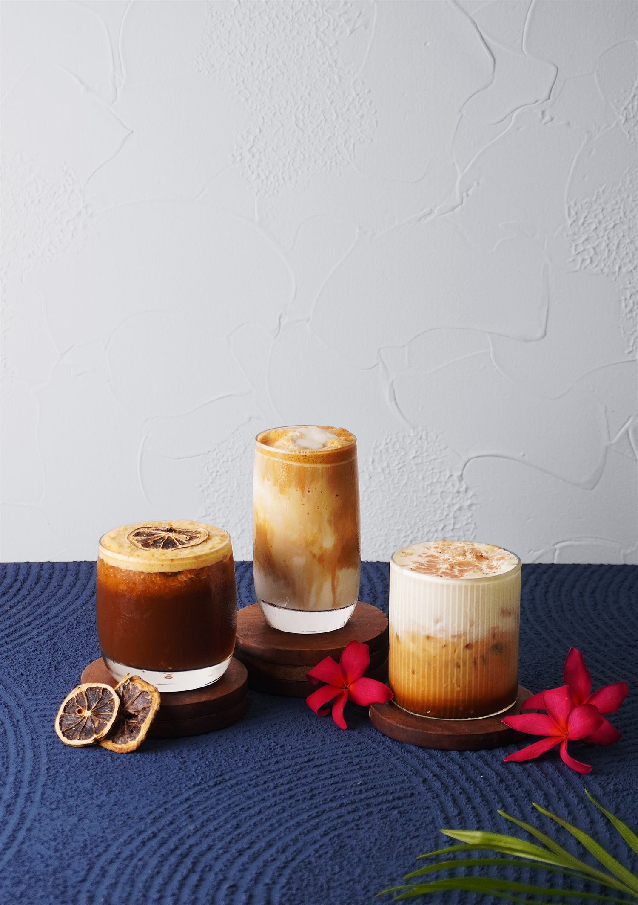
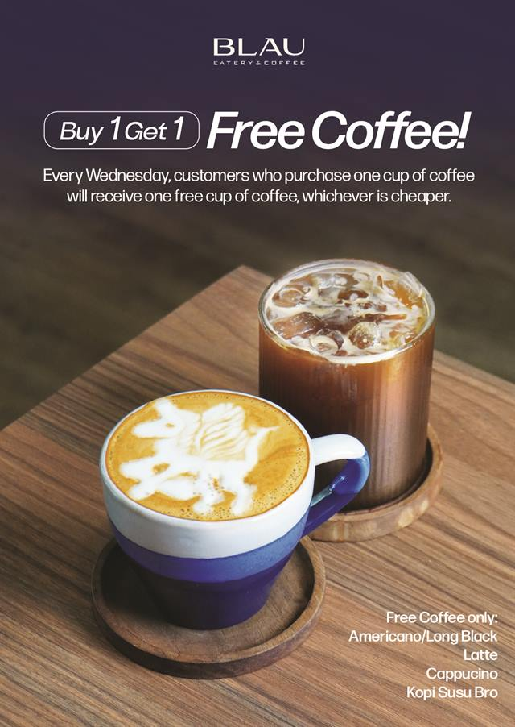
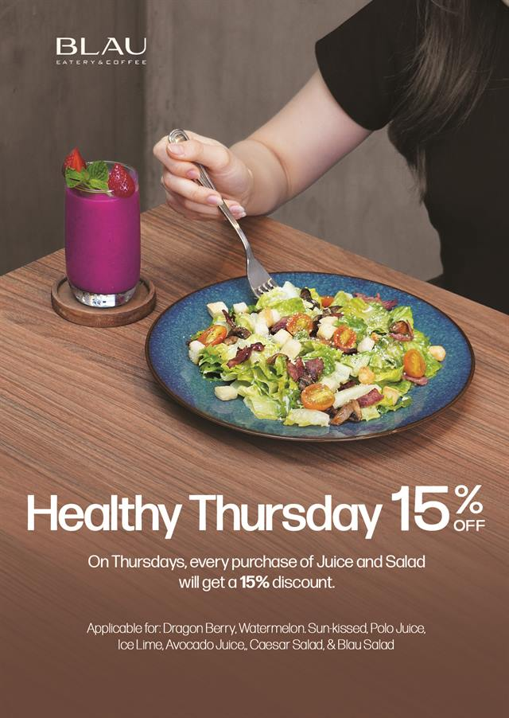
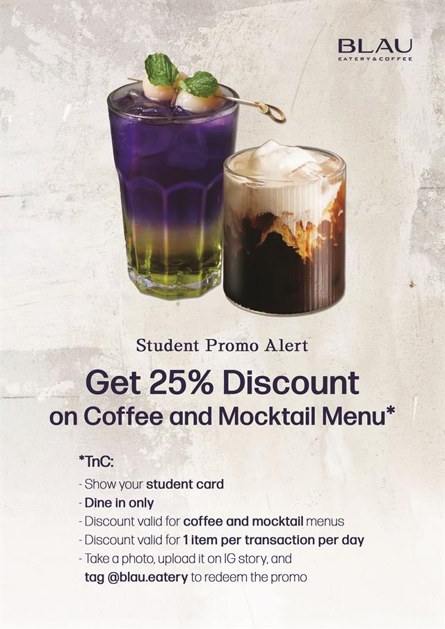
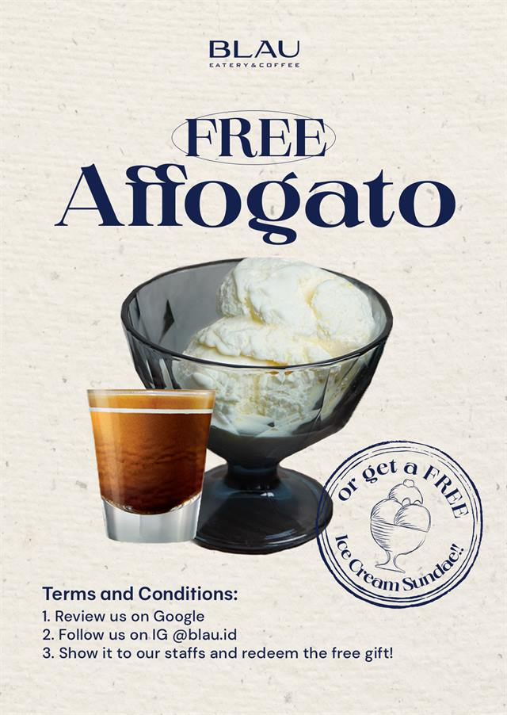

An all-day eatery and coffee bar in Kelapa Gading. Open daily, 10.00–22.00.
Loyalty Card
One stamp for every 100k spent. Free iced lemon tea at five, free black or white coffee at eight, and Rp50.000 back at ten.
What’s On
-
Every Wednesday

Buy 1 Get 1 Coffee
Americano, Long Black, Latte, Cappuccino or Kopi Susu Bro. The cheaper cup is on us.
-
Every Thursday

Healthy Thursday, 15% Off
Juice and salad all day. Dragon Berry, Watermelon, Sun-kissed, Ice Lime, Avocado, Caesar Salad and Blau Salad.
-
Students, dine in

25% Off Coffee & Mocktails
Show your student card. One item per transaction per day, and tag us in your story to redeem.
-
Review & follow

Free Affogato
Review us on Google, follow us on Instagram, then show our staff. An ice cream sundae works too.